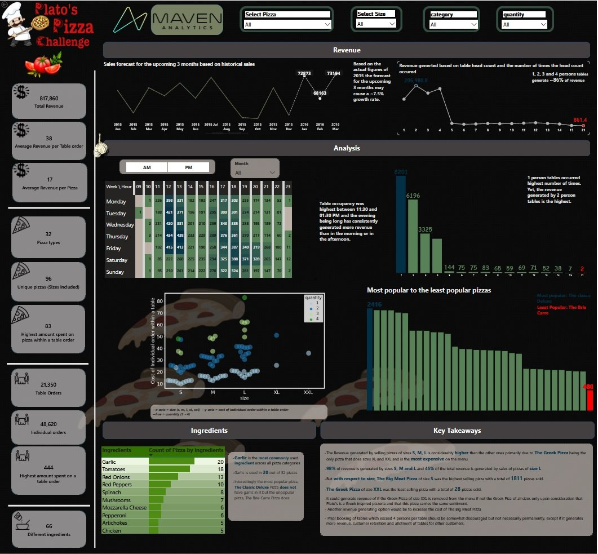
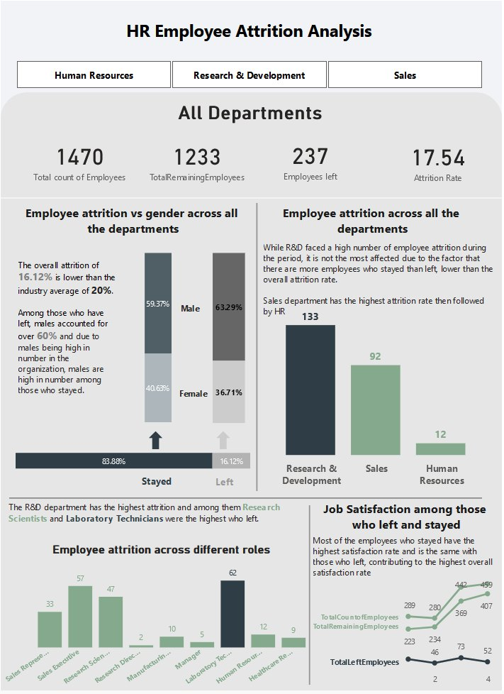
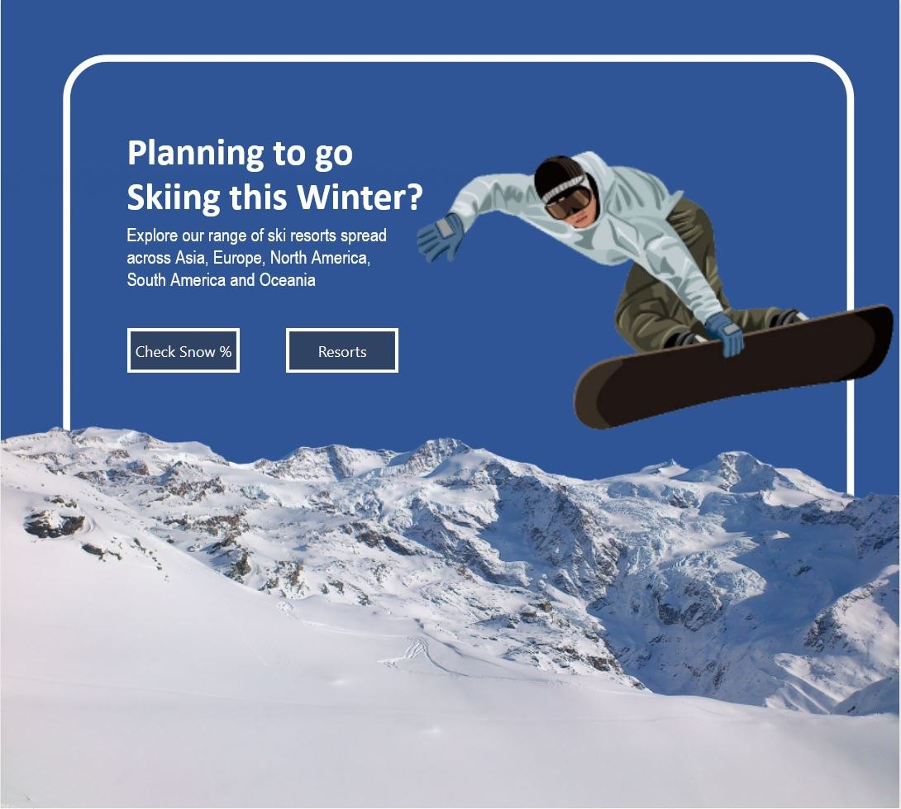
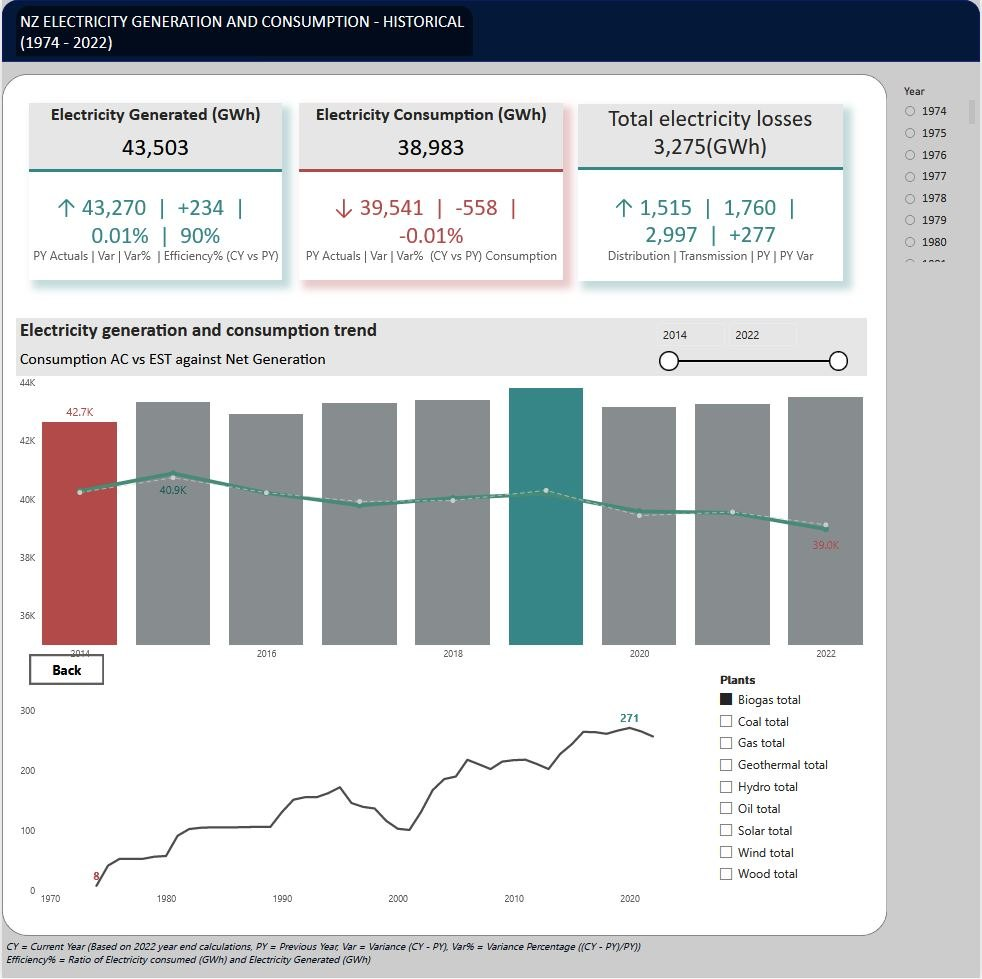

AI Developer · Auckland, NZ
I build AI agents and automations that run in production.
Retrieval systems, multi-agent workflows with evaluation gates, and the integrations that connect them to real business systems. Grounded in a background in data analytics.
Currently
Updated October 2026
Contract role
AI Developer at Celtine Ltd
Building AI agents and automation for customer service, marketing and day-to-day operations in e-commerce.
Part-time
Telecare Monitoring Representative
Responding to emergency alarms at Hato Hone St John, where clear protocols and fast escalation decisions matter.
Looking for
AI and automation roles in Auckland
Full-time preferred. I work directly with business teams to turn manual processes into reliable AI systems.
What I do
Retrieval and RAG
Question-answering over documents with hybrid BM25 and dense-vector retrieval.
LangChain · ChromaDB · Ollama
Agents and evaluation
Multi-agent workflows with tiered evaluation gates, so output is checked before it ships.
LLM-as-judge · RAGAS · DeepEval · LangSmith
Automation and integration
Workflows connecting CRM, e-commerce, shipping, inventory and social platforms.
n8n · Docker · Linux · REST
Data analytics
Dashboards and analysis that turn raw data into decisions.
SQL · Python · Power BI · SAS
Featured AI project
All AI workPersonal project
Telecare RAG Chatbot
Monitoring staff need fast, correct answers about alarm types, triage and escalation. This assistant answers from a process document and says when the documents don't cover a question, instead of guessing.
It combines keyword search with meaning-based search, so it finds the right passage whether a question uses the document's exact terms or not.
Python · LangChain · BM25 + sentence embeddings · Ollama · Gradio
Analytics projects
All projects
Plato's Pizzeria Sales
A year of orders: sales forecast, revenue by table size, and menu recommendations.
Power BI · DAX · Python

Employee Attrition
What drives people to leave, prototyped in SQL and rebuilt as DAX measures.
Power BI · SQL Server · Python

Ski Resorts Planner
499 resorts joined to global snow-cover data in an app-style report.
Power BI · Excel · MySQL

NZ Electricity
National generation, consumption and losses with year-on-year KPIs.
Power BI · DAX
Experience
AI Developer (contract)
Celtine Ltd, Auckland
- Map manual processes with operational staff and owners, and break them into steps an agent can own.
- Automate sales orders, supplier stock checks, out-of-stock notices, dropship tracking and fraud screening across e-commerce, ERP, helpdesk and shipping systems.
- Write evaluations, investigate production failures and remove silent failures; design for graceful degradation and escalation to staff.
- Maintain the self-hosted Linux infrastructure behind it (Docker, Cloudflare Tunnel, backups, credentials).
May 2025 to present
- Claude
- OpenAI
- n8n
- JavaScript
- Docker
- Linux
- Cloudflare
- Supabase
- PostgreSQL
- Magento 2
- Git
Telecare Monitoring Representative (part-time)
Hato Hone St John
Respond to emergency alarms, coordinate with customers, responders and support services, and make timely escalation decisions under established protocols.
Oct 2023 to present
Campaign Developer
Digital Alchemy
Built segmented multi-channel campaigns in Unica Campaign, with pre- and post-campaign analysis in Oracle and SQL.
Oct 2021 to Feb 2022
- Unica
- Oracle
- SQL
Analytics Specialist
Spark NZ (Skinny Mobile and Broadband)
Built Power BI and Tableau dashboards and automated reporting with Alteryx, SQL and Snowflake. Awarded for best customer service.
Jan 2021 to Jun 2021
- Power BI
- Tableau
- Alteryx
- Snowflake
- SQL
Education
Master of Analytics (Honours)
Auckland University of Technology
Thesis: support vector machines to classify stress from EEG data, 86.8% cross-validated accuracy, with the New Zealand College of Chiropractic.
2023 to 2024
Bachelor of Technology, Computer Science Engineering
Jawaharlal Nehru Technological University, India
2007 to 2011
Certification
SAS Certified Specialist: Base Programming Using SAS 9.4
SAS Institute
Let's talk about what you're building.
Open to AI and automation roles in Auckland.